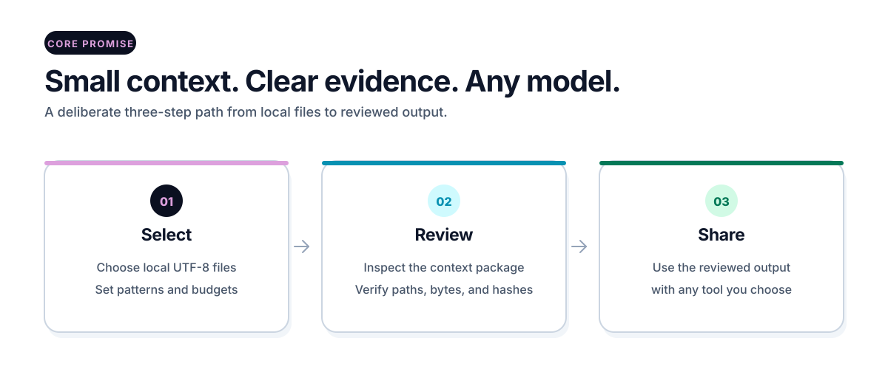

Select
Choose one goal and only the local text files needed for it.
Local-first context control
Give an AI the files it needs for one task—small, reviewable, and backed by exact byte evidence.

How it works
Choose one goal and only the local text files needed for it.
Preview the selection and inspect the readable context before sharing anything.
Prove the package and recorded source bytes still match exactly.
Get started
Install an immutable release, enter a small project, and keep the complete flow visible.
pipx install "git+https://github.com/CNTX-PROJECT/OPENCNTX.git@v1.4.0"
opencntx --version
opencntx init
opencntx pack --preview
opencntx pack
opencntx verifySafety boundary
A green verification proves byte identity. It does not prove truth, completeness, safety, or OWNER acceptance.
Documentation
Install, create a first package, inspect it, and remove it safely.
See what OPENCNTX reads, records, proves, and deliberately does not decide.
Add durable sources, tasks, evidence, recovery, and a bounded roadmap.
Review the local boundary, exclusions, limitations, and reporting route.
Use the complete reference only when you need exact syntax.
Inspect the accessible components, states, tokens, and joint quality gate.
Support
Question or reproducible bug? Use Support.
Possible vulnerability? Follow the private route in the Security Policy. Never post secrets publicly.